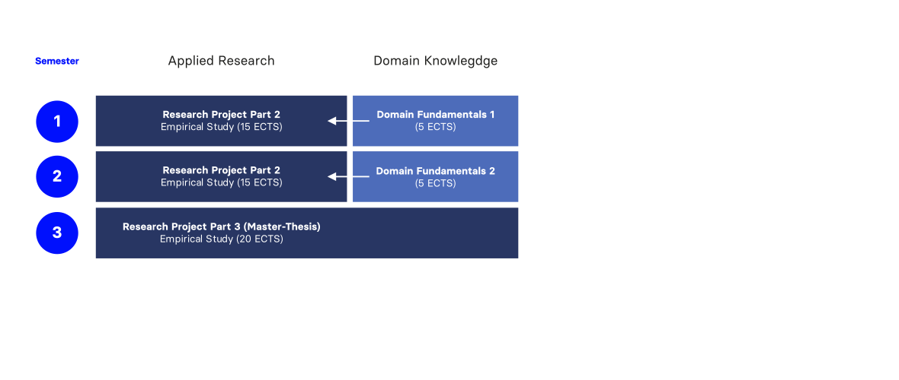
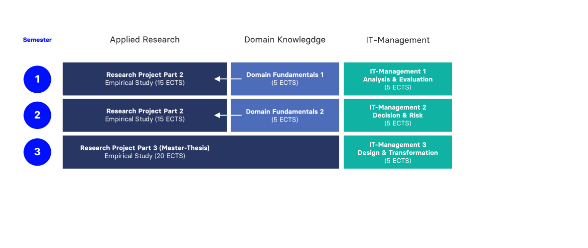
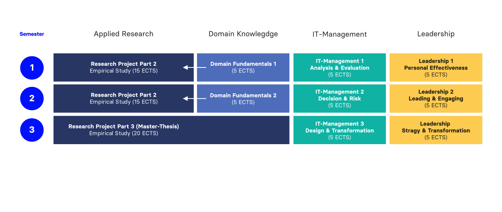
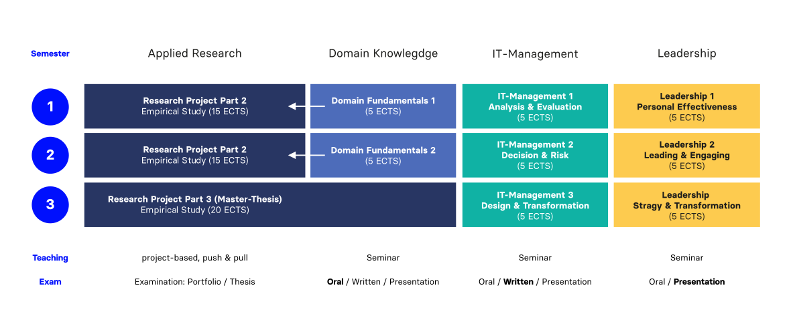

Applied Research Master (MSc) at HNU
Neu-Ulm University of Applied Sciences
April 29, 2026
Cyber attacks.
AI transformation.
Platform shifts.
Unknown unknowns.
Future has no recipe.
It’s all about your capabilities to see, prioritize and solve problems.
If you …
Welcome.
The programme is designed to provide you with the opportunity to learn
mental models for
thinking in systems,
methods to make
evidence-based decisions,
& social skills to
lead from day one.
The programme is designed to qualify you to
It takes complexity
to defeat complexity.
A well-stocked toolbox is a foundation. It supports very different directions.
And other jobs we haven’t heard of yet




The research challenge: Cyber Resilience and Agentic AI
Agentic AI is the new asset to defend and the new force on both sides of the attack. The playbook for either role hasn’t been written yet.
The study program starts early October 2026. The application portal is open from 2 May to 15 July (winter term).
Admission requirements
Details: www.hnu.de/dli
The hardest problems in IT management don’t come with answers. The DLI is where you learn to find them. With the depth of a researcher and the eye of a leader. Build the toolbox. Lead what comes next.